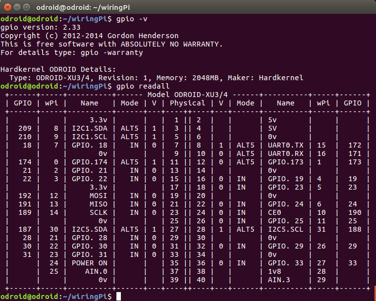

Odroid XU4 Setup Instructions¶
Setup¶
Prerequisites. Download the latest Ubuntu image for ODroid XU4 (Ubuntu 16.04 as of last update) from here. Grab a copy of Etcher to flash the image onto a micro-SD card - you’ve got one ready, right?
Booting Up. After Etcher is done flashing the image, safely eject the card and plug the micro-SD into the ODroid. Before turning on the power, make sure the boot media slider is set to uSD (not eMMC). Red and blue LEDs will turn on when the ODroid is ready.
Connecting to ODroid. Connect the ODroid to a router with an ethernet cable - your PC must be on the router’s network, too, either via a wired or wireless connection. The router must be connected to Internet, otherwise you won’t be able to update the ODroid and pull code from repositories.
After you connect the ODroid to the router, check it’s IP address either via the homepage of the router, or by scanning the network using nmap. Let’s assume the IP address of the ODroid is 192.168.0.17. Connect to the ODroid by typing in your terminal:
ssh odroid@192.168.0.17
Confirm you want to continue connecting; when prompted for a password, enter odroid. Remember, you won’t see the characters you’re entering in the terminal - this is a security feature. If everything goes well, your terminal prompt will change to odroid@odroid:~$.
Updating. After you successfully connect to the ODroid, get the latest updates for Ubuntu by typing in the terminal:
sudo apt-get update
sudo apt-get upgrade
Remember, the default sudo password is odroid. The update may take a few minutes - at this point you can grab a cup of coffee, and by the time you’re back the update will have finished.
After the update is completed, the ODroid is ready to be configured to run your on-board programs.
Collecting Dependencies¶
Git. Git doesn’t come with Ubuntu out-of-the-box, so install it with the following command:
sudo apt-get install git
Point Grey/FLIR Spinnaker. Camera control software built with Spinnaker is currently under constructions. This section will be updated with instructions once it’s ready.
PySimpleBGC. PySimpleBGC is a Python package providing an API to communicate with gimbal control board. Install it with pip:
sudo pip install pysimplebgc
WiringPi. WiringPi is a driver library for accessing GPIO pins on the ODroid. From the home directory (enter cd ~ in terminal to quickly get there), type in the terminal:
git clone https://github.com/hardkernel/wiringPi.git
cd wiringPi/
./build
After the build script finishes executing, test your installation of WiringPi.
gpio -v
gpio readall
If the installation was successful, you should see something similar in your terminal.
{kind=link}
Finally, get a version of WiringPi with a Python wrapper from Hardkernel’s repository:
git clone https://github.com/hardkernel/WiringPi2-Python.git
Finish installing WiringPi2-Python by following the instructions in the README.